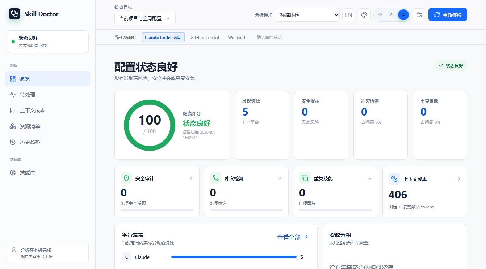
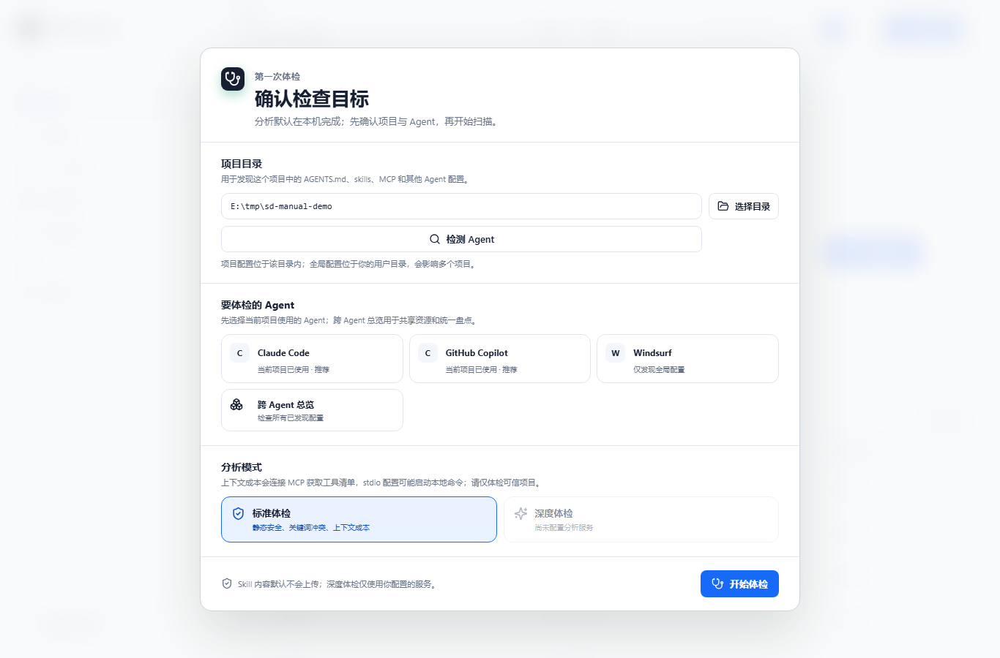
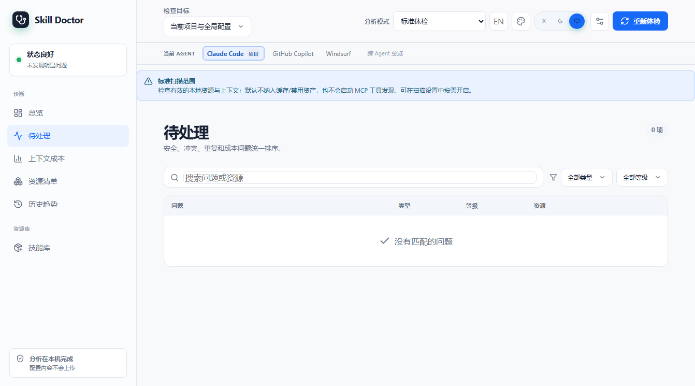
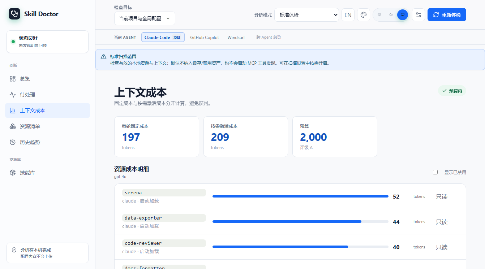
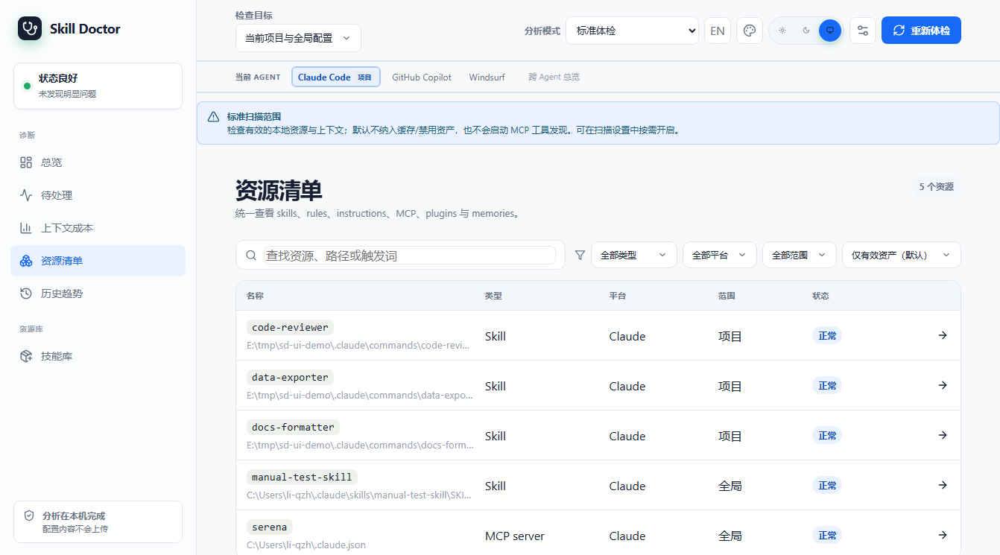
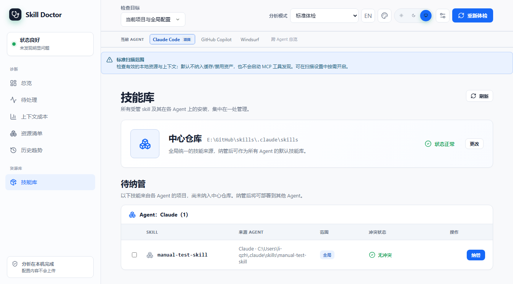

文档入口Documentation
手册 使用手册（真实截图）Manual (real screenshots)
每个命令覆盖「使用场景 / 使用方式 / 使用效果」，终端截图原样保留配色，支持中英切换。 Each command covers Scenario / Usage / Effect with faithful terminal colors; bilingual toggle.
Markdown 命令说明文档Command reference
纯文本版说明，内容与手册类似，便于在仓库或编辑器里阅读，同样中英对照。 Plain-text reference, similar to the manual, bilingual; easy to read in-repo or in an editor.
样例 scan 报告（HTML）scan report (HTML)
skill-doctor scan --report 真实生成的技能盘点报告。— a real skill inventory report.
样例 dashboard 报告（HTML）dashboard report (HTML)
skill-doctor dashboard --report 真实生成的单文件总览报告。— a real single-file overview report.
skill-doctor ui 界面样例skill-doctor UI screenshots
以下是 skill-doctor ui 启动的本地 Web 仪表盘在各视图下的真实截图。首次启动会有一个引导对话框（Onboarding），帮你选择要分析的 AI 平台。
Real screenshots of the local web dashboard launched by skill-doctor ui, across its views. The first launch shows an onboarding dialog to pick which AI platform to analyze.






Settings → Pages 中将 Source 设为 Deploy from a branch、分支选 main、目录选 /docs 并保存后，即可访问 https://<用户名>.github.io/<仓库名>/。手册位于 /pages/manual.html。若未启用 Pages，也可通过 https://htmlpreview.github.io/?https://github.com/<用户名>/<仓库名>/blob/main/docs/pages/manual.html 临时预览。
This directory is set as the GitHub Pages source. In the repo Settings → Pages, set Source to Deploy from a branch, branch main, folder /docs, and save. Then visit https://<user>.github.io/<repo>/ (manual at /pages/manual.html). If Pages is off, preview via https://htmlpreview.github.io/?https://github.com/<user>/<repo>/blob/main/docs/pages/manual.html.